Aristocrat Fine Foods brings distinctive foods to American homes while building trusted trade relationships across domestic and international markets.
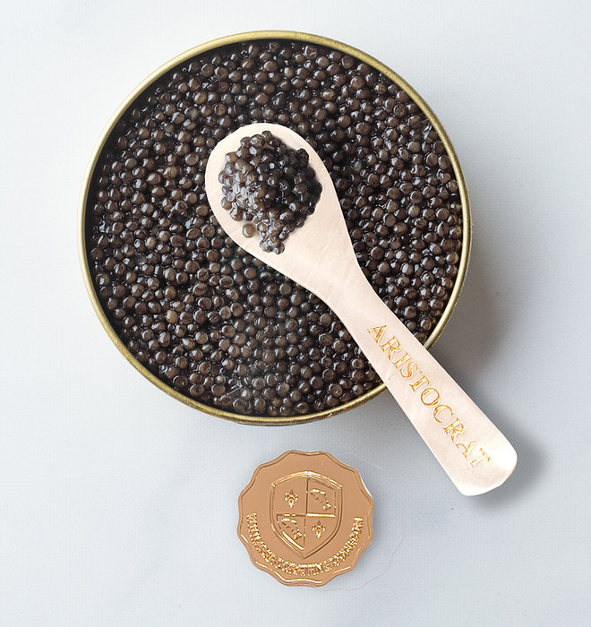
Great food begins with exceptional ingredients. Aristocrat Fine Foods seeks out products with character, provenance and integrity, then creates the relationships that allow them to reach the markets that value them most.
For individual customers, that means making remarkable foods easier to discover, understand and enjoy at home. For trade partners, it means working across sourcing, wholesale, distribution, foodservice, hospitality, importing and international export with the same emphasis on judgment, independence and long-term relationships.
Our role is not simply to assemble a catalogue. It is to understand the ingredients and the moment, the opportunity and the audience, then connect them thoughtfully.
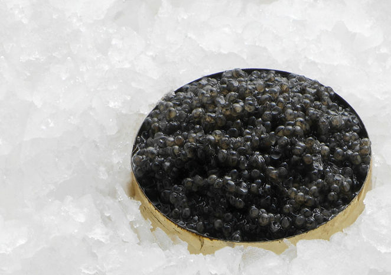
Our Delicacies brings caviar, smoked seafood, scallops, truffles and other specialty foods directly to customers nationwide. The aim is to make remarkable foods easier to discover, understand and enjoy - for a dinner, a weekend table, a gathering with friends or simply a better everyday meal.
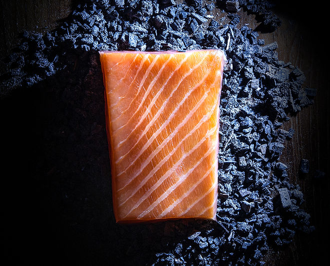
Aristocrat works with chefs, hospitality and foodservice operators, retailers, distributors, producers and commercial buyers at home and abroad. We begin with what the client is trying to source, serve, introduce, distribute or bring to market, then apply our product knowledge, market perspective and trusted relationships to the requirement.
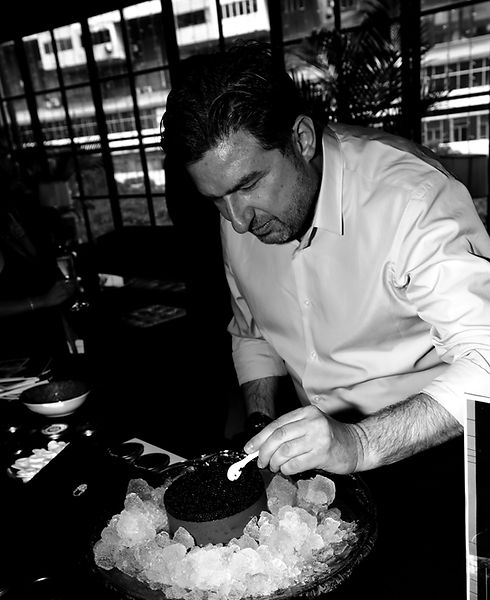
Aristocrat is not built around one vendor or a permanent catalogue. Independence allows us to evaluate each source on its merits, respond when quality or availability changes and maintain the strictest integrity of our solutions-based approach to gastronomy.
A customer may remember a food experienced abroad. A chef may need a particular ingredient or format. A hotel may be developing a new service concept. A buyer may see demand forming in another market. Tell us what you are looking for, even when it is not yet part of the Aristocrat collection.
Explore ingredients and origins, recipes, serving suggestions, plating styles, chef perspectives, curated producer favourites, responsible farm to table education, hospitality and the movement of food between markets.
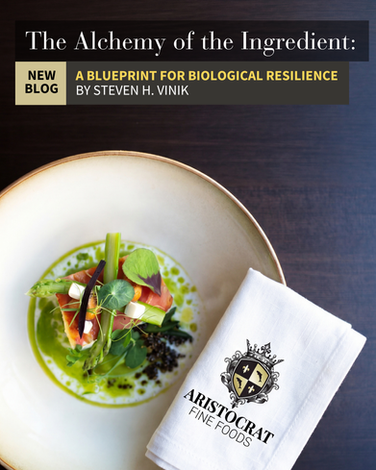
A practical reflection on biological resilience, whole foods, and the anti-inflammatory kitchen protocol behind restorative meals designed for modern life.
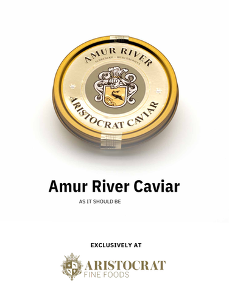
Blini with caviar is a timeless appetizer built on balance and simplicity. Warm blini, cool crème fraîche, and caviar come together to create an elegant dish ideal for entertaining or relaxed dining at home.
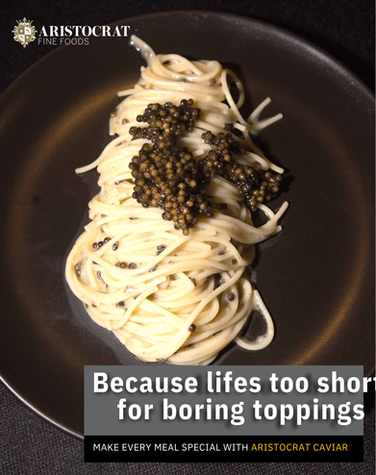
Linguine with caviar is a minimalist pasta dish where simplicity defines the result. Olive oil, garlic, and warm pasta create the base, while caviar is added at the end for a clean, balanced finish. Ideal for a refined, modern meal at home.
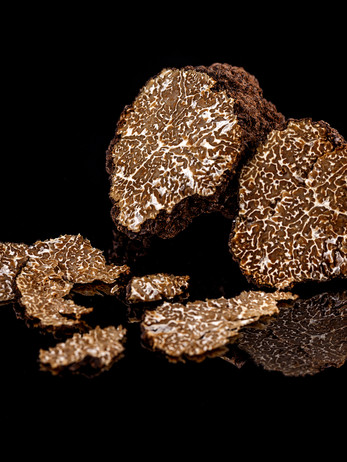
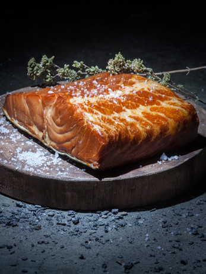
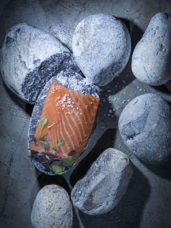
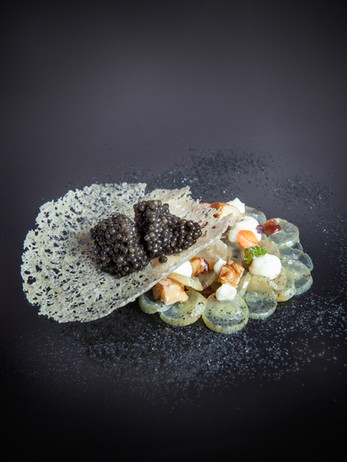
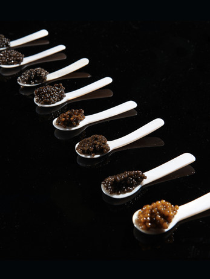
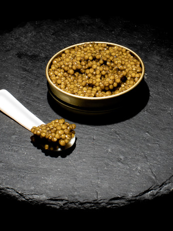
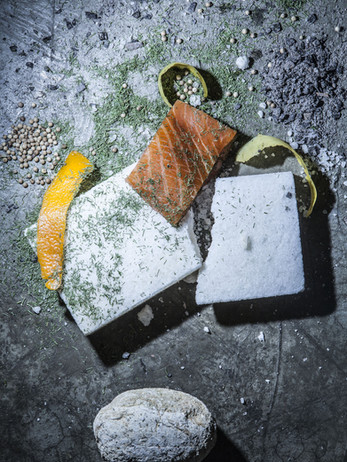
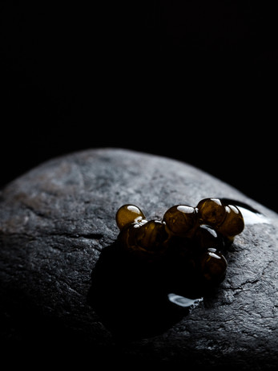
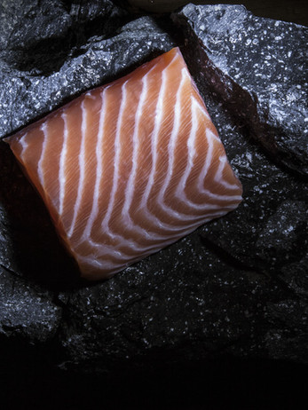
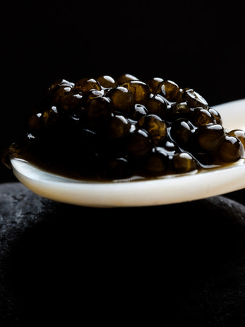
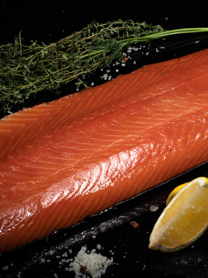
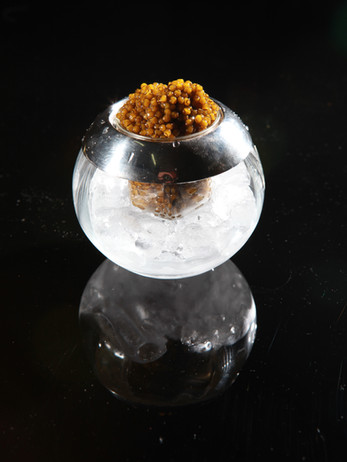
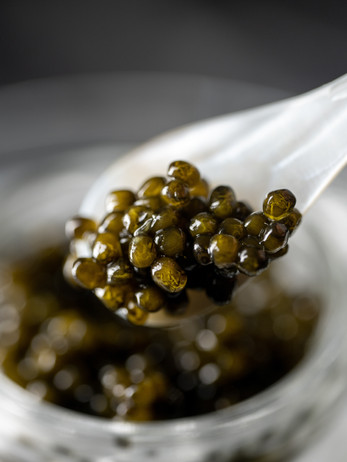
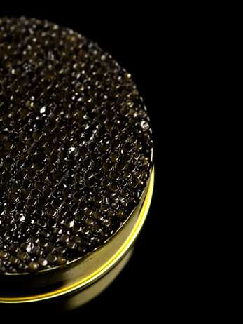
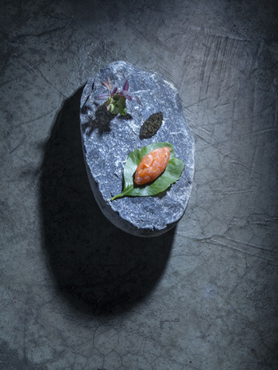
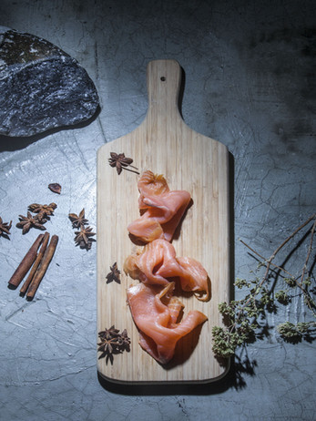
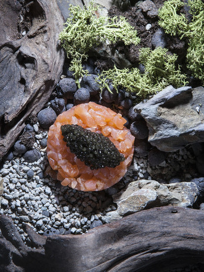
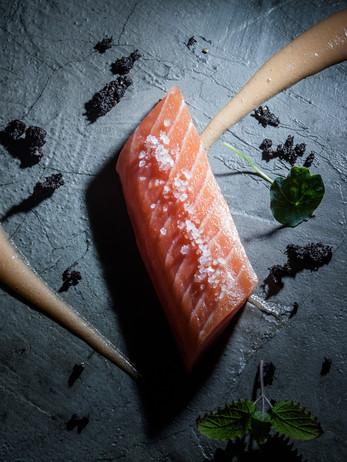
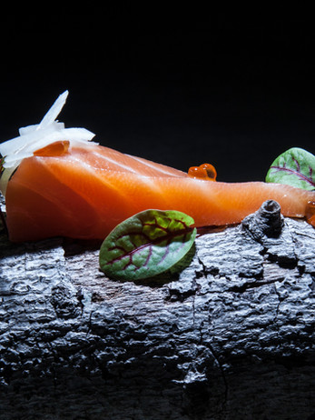
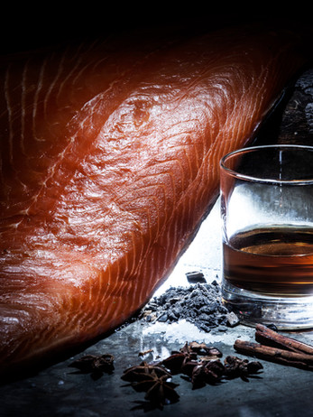
For customer service, inquiries, or to request an appointment, please contact us at 1-888-357-3828. Our team is available to assist you with any questions and to provide personalized support.